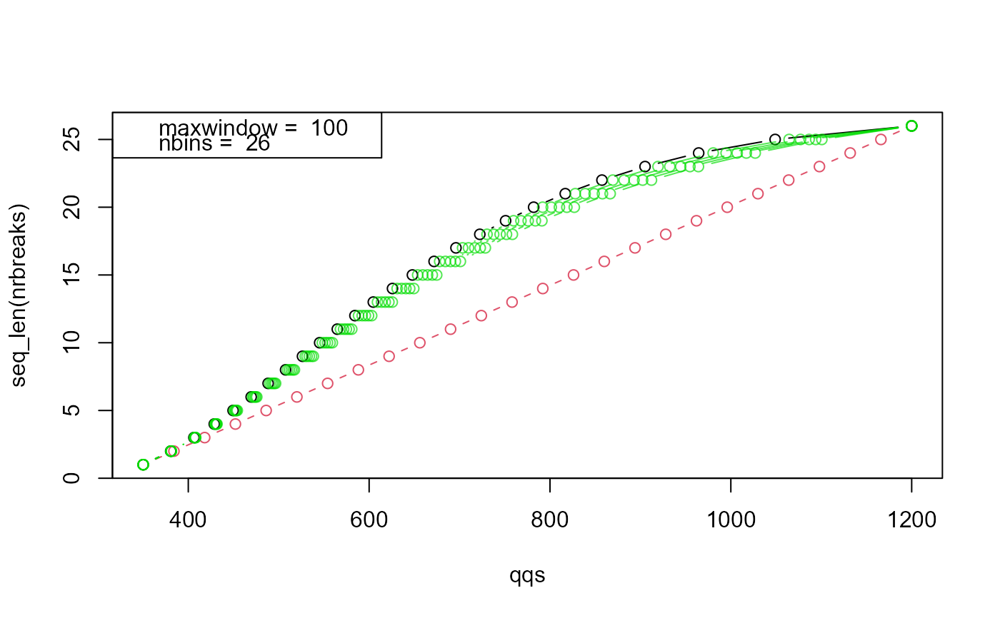

R/readjustWindow.R
readjustWindows.RdReadjust windows so that boundaries in regions of few peaks.
readjustWindows(wind, ms1data, digits = 1, maxbin = 15, plot = FALSE)
| wind | a data frame with columns from and to |
|---|---|
| ms1data | masses |
| digits | mass accuracy |
| maxbin | maximum number of bins |
| plot | diagnostic plots (default FALSE) |
data.frame of same format as wind but with improved start and end masses.
data(masses) cdsw <- Cdsw(masses) breaks <- cdsw$sampling_breaks(maxwindow=100,plot=TRUE)  table <- cdsw$asTable() dim(table) #> [1] 25 5 head(table) #> from to mid width counts #> 0% 349.63 381.72 365.675 32.09 6123 #> 4% 380.72 408.72 394.720 28.00 6415 #> 8% 407.72 432.27 419.995 24.55 6530 #> 12% 431.27 454.73 443.000 23.46 6529 #> 16% 453.73 476.25 464.990 22.52 6657 #> 20% 475.25 497.07 486.160 21.82 6752 tmp <- readjustWindows(table, masses,maxbin=10) data.frame(tmp) #> from to mid width counts #> 1 349.63 381.95 365.790 32.32 6177 #> 2 380.45 409.05 394.750 28.60 6576 #> 3 407.65 432.35 420.000 24.70 6557 #> 4 431.15 455.05 443.100 23.90 6722 #> 5 453.65 476.35 465.000 22.70 6746 #> 6 475.15 497.15 486.150 22.00 6828 #> 7 496.05 518.15 507.100 22.10 6763 #> 8 516.45 539.05 527.750 22.60 7017 #> 9 537.45 560.05 548.750 22.60 6863 #> 10 558.55 581.45 570.000 22.90 6916 #> 11 580.15 603.45 591.800 23.30 6800 #> 12 602.15 626.15 614.150 24.00 6607 #> 13 624.55 650.15 637.350 25.60 6776 #> 14 648.55 675.25 661.900 26.70 6531 #> 15 674.15 701.45 687.800 27.30 6496 #> 16 700.25 729.15 714.700 28.90 6372 #> 17 727.65 759.15 743.400 31.50 6344 #> 18 757.65 791.55 774.600 33.90 6200 #> 19 790.25 827.55 808.900 37.30 6035 #> 20 826.25 867.15 846.700 40.90 5693 #> 21 866.05 912.75 889.400 46.70 5495 #> 22 911.65 964.75 938.200 53.10 5183 #> 23 963.65 1027.65 995.650 64.00 4641 #> 24 1026.35 1101.15 1063.750 74.80 4122 #> 25 1099.95 1200.48 1150.215 100.53 3120